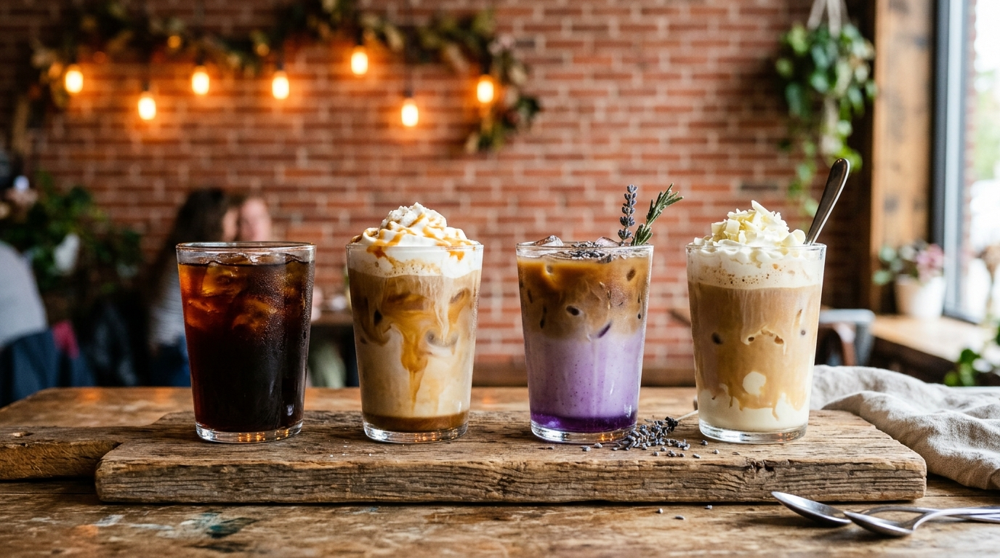
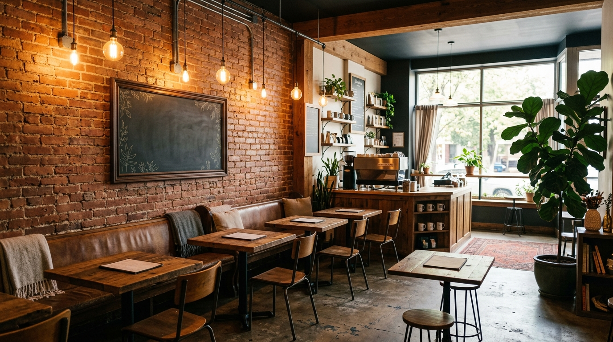
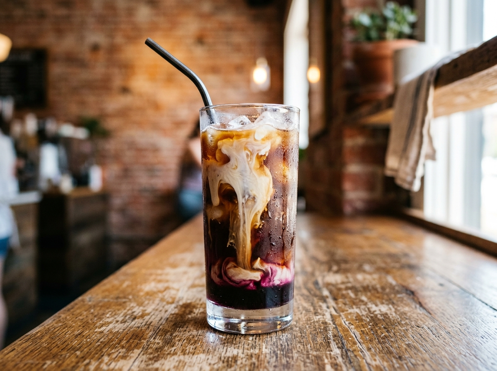
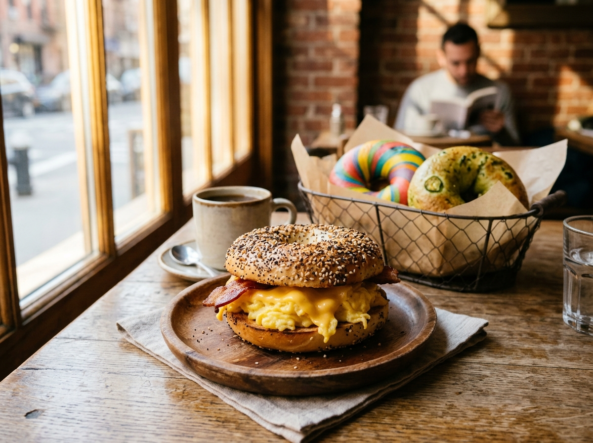

The Grind is Garrett's own coffee house — famous for flights of four full-size drinks, cozy exposed brick, and baristas who treat your order like it matters. Now pouring in Fort Wayne, too.
The story so far
The Grind opened in 2019 as a hidden gem in downtown Garrett, building a following one Instagram-worthy flight at a time. A custom mobile espresso bar joined in 2021 — and in February 2026, The Grind did something small towns dream about: it opened in Glenbrook Square, in a space a Starbucks left behind.

From the board
Espresso classics, over-the-top seasonal creations, boba, smoothies, colorful energy drinks — and New York-style bagels to go with them.
Four full-size drinks — mix espresso, cold brew and seasonal specials. The signature.

Blackberry Crumble, Reese's cold brew, brown sugar shaken espresso — the fan favorites.
Maui Wowie, Cotton Candy Dreams and friends — plus boba teas and fruit smoothies.

Rainbow, jalapeño, red pepper, French toast — plain or built into a breakfast sandwich.
Word around town
Hundreds of public reviews around 4.5 stars. Here's how people put it — kept as written.
"I had a brown sugar shaken espresso that made Starbucks look bad!"
"That Blackberry Crumble was the best iced coffee I've ever had — especially the mix of the cream and the blackberry syrup!"
"I was shown amazing service, served tasty coffee all in sweet and cozy atmosphere! Love this place and highly recommend!!"